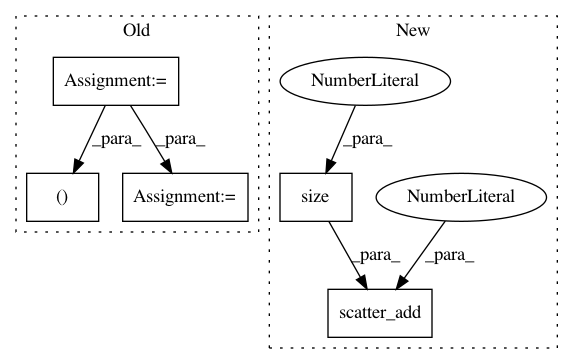

62a05d5e2611f6ec8fda2c7d7c5b57cf8b64402b,torch_geometric/nn/functional/pool/pool.py,,max_pool,#Any#Any#Any#Any#,5
Before Change
input = scatter_max(cluster, input)
position = scatter_mean(cluster, position)
index = cluster[index.view(-1)].view(2, -1) // Replace edge indices with cluster indices.
mask = index[0, :] != index[1, :] // Remove self-loops.
index = coalesce(index) // Remove duplicates.
return input, index, position
After Change
return index, position
def max_pool(input, index, position, cluster):
_cluster = cluster.unsqueeze(1).expand(-1, input.size(1))
input = scatter_add(_cluster, input, dim=0)
return (input,) + _pool(index, position, cluster)
def average_pool(input, index, position, cluster):
In pattern: SUPERPATTERN
Frequency: 3
Non-data size: 5
Instances
Project Name: rusty1s/pytorch_geometric
Commit Name: 62a05d5e2611f6ec8fda2c7d7c5b57cf8b64402b
Time: 2018-01-12
Author: matthias.fey@tu-dortmund.de
File Name: torch_geometric/nn/functional/pool/pool.py
Class Name:
Method Name: max_pool
Project Name: rusty1s/pytorch_geometric
Commit Name: 46887e49fe301323e82a258a8063db846ac63339
Time: 2018-11-16
Author: matthias.fey@tu-dortmund.de
File Name: torch_geometric/nn/prop/gcn_prop.py
Class Name: GCNProp
Method Name: forward
Project Name: rusty1s/pytorch_geometric
Commit Name: 0ab5b005164cddccbf7c8a3d66ff6707333de80b
Time: 2018-05-07
Author: matthias.fey@tu-dortmund.de
File Name: torch_geometric/utils/matmul.py
Class Name:
Method Name: matmul